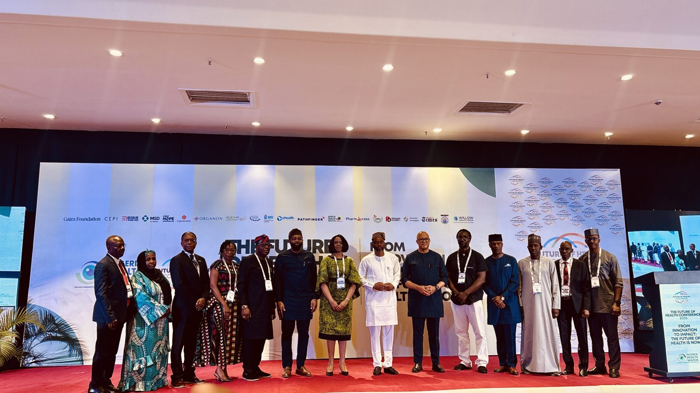

Five key lessons from Nigeria Health Watch’s 2026 Health Conference

The 11th annual Future of Health Conference brought together policymakers, researchers, health professionals, innovators, development partners and private-sector representatives to discuss how Nigeria can strengthen its health system. A central theme was moving beyond promising pilots and isolated successes to solutions that reach more people and improve health outcomes over time.
The discussions stressed that innovation should be judged by its practical impact, not simply by whether a new technology has been developed. Devices and interventions need to be affordable and accessible, and supported by financing, infrastructure and trained workers. A diagnostic tool, for example, has limited value if no one can operate it or patients cannot access appropriate follow-up care.
Reliable data was another priority. A presentation on Nigeria’s HIV response described how a national survey revised the estimated number of people living with HIV from 3.2 million to 1.8 million, changing the reported treatment coverage figure. Researchers studying malaria drug resistance are also using molecular analysis to track patterns across locations. Conference discussions emphasised that such evidence must be clearly communicated and used in policy and health programmes.
Presentations highlighted the role of communities in shaping research and services. In the ENABLE study on Lassa fever, engagement helped researchers identify infections that might otherwise have gone undetected, including cases where symptoms such as tiredness were not initially considered serious. Maternal healthcare discussions made a related point about delivery systems: a Project HOPE-supported initiative in Bwari Area Council is working across 10 primary healthcare facilities, with five equipped as ultrasound hubs. The effort combines equipment with health worker training, mentorship, supervision and referrals, underscoring that technology alone cannot strengthen primary care.
The final lesson was that epidemic preparedness depends on work done before an outbreak. The Coalition for Epidemic Preparedness Innovations’ 100 Days Mission aims to develop safe and effective vaccines against a new pandemic threat within 100 days of its identification, with initial authorisation and readiness for large-scale manufacturing as goals. It does not mean vaccinating entire populations within that period. Experts said sustained funding and partnerships among governments, researchers, philanthropic organisations and industry are needed to support preparedness and equitable access to health technologies.
Source: Premium Times